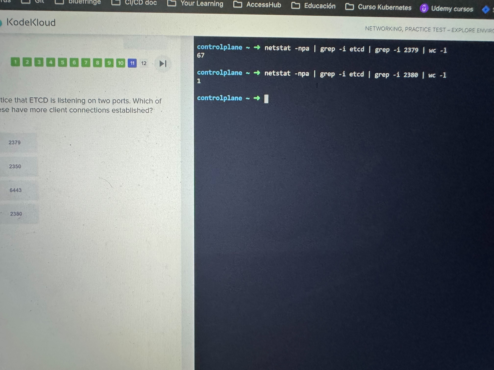
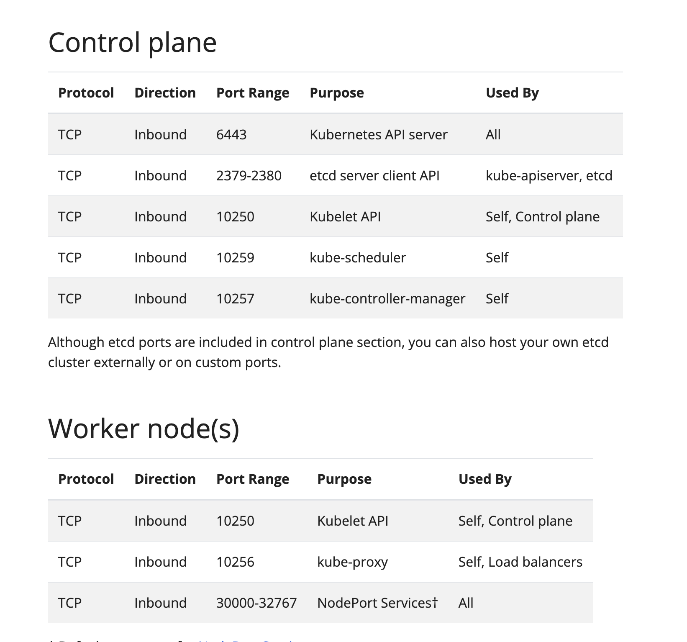
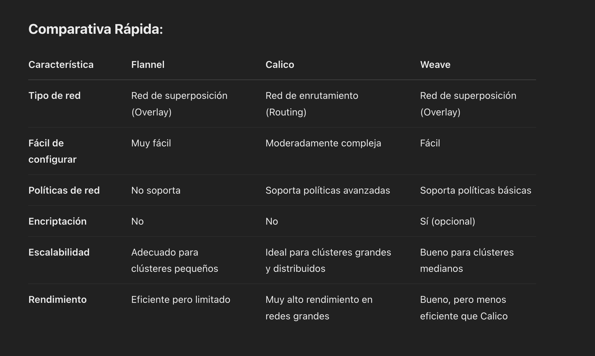
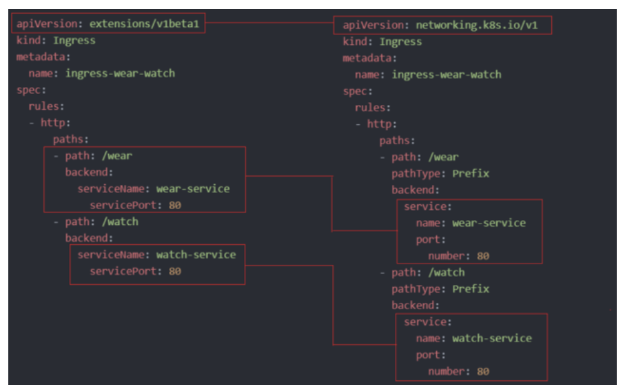
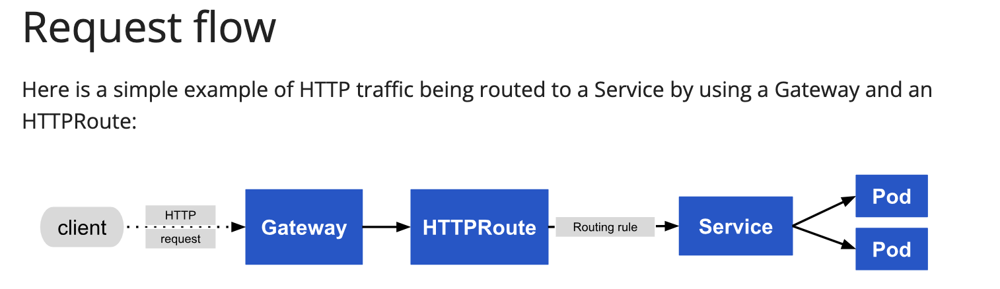
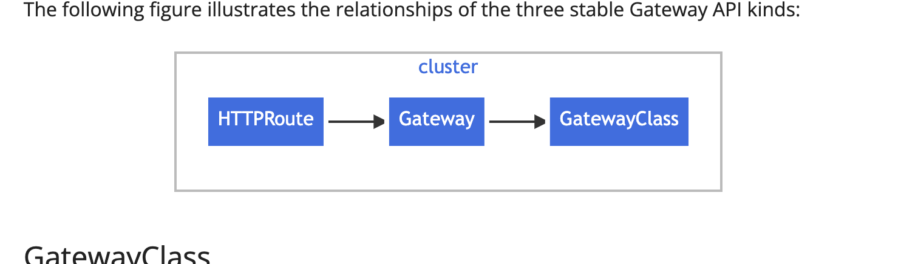

Networking
Este comando te ayuda a saber cual es el default gateway de un sistema:
Y para ver las interfaces de red:
O más especificamente:
controlplane ~ ➜ ip link show cni0
5: cni0: <BROADCAST,MULTICAST,UP,LOWER_UP> mtu 1360 qdisc noqueue state UP mode DEFAULT group default qlen 1000
link/ether 5e:8c:d4:cc:64:d9 brd ff:ff:ff:ff:ff:ff
Para ver la internaz del bridge:
Para en general ver las rutas:
Para saber cuantas conexiones hay establecidas para un proceso de red:

Puertos por defecto de K8s

CNI
Para checar los plugins de CNI soportados, se puede revisar:
Para checar que plugin usa el kubelet:
Que maneja Kubeadm y qué no?
Lo que maneja kubeadm automáticamente: Cuando configuras un cluster con kubeadm, este se encarga de gran parte de la configuración de networking:
- Configuración básica del plano de control: Establece los componentes principales como API Server, etcd, etc.
- Instalación del CNI (Container Network Interface): kubeadm prepara el cluster para usar un plugin de red, pero necesitarás instalarlo explícitamente.
- Configuración de kube-proxy: Este componente implementa las reglas de red para los servicios (incluyendo ClusterIP).
- Configuración del DNS interno: Configura CoreDNS para la resolución de nombres dentro del cluster.
Lo que necesitas configurar manualmente:
-
Seleccionar e instalar un plugin CNI: Después de inicializar el cluster con kubeadm, debes instalar un plugin de red como Calico, Flannel, Weave, etc. Esto es lo que realmente implementa la comunicación pod-a-pod entre nodos.
-
Configuración de servicios: Los servicios como ClusterIP se crean mediante manifiestos de Kubernetes, no requieren configuración manual de IP a bajo nivel.
Entonces, ¿necesitas hacer ambos?
No necesitas configurar manualmente las direcciones IP con comandos como ip addr en un cluster de producción. Las herramientas como kubeadm y los plugins CNI manejan toda la configuración de red de bajo nivel.
Lo que sí necesitas hacer es:
- Asegurarte de que tus nodos tengan conectividad de red entre sí
- Inicializar el cluster con kubeadm
- Instalar un plugin CNI
- Crear tus servicios (ClusterIP, etc.) mediante manifiestos de Kubernetes
Los comandos como ip addr son útiles para entender y depurar cómo funciona el networking internamente, pero no son parte del flujo normal de configuración de un cluster Kubernetes.
IPs por defecto
Las IPs privadas son 10.x.x.x, 172.x.x.x y 192.168.x.x
Los CNI comunes usan los siguientes rangos de IP para los pods:
Calico: Si no se configura un rango específico, Calico usa por defecto el rango 192.168.0.0/16
Flannel: Suele usar 10.244.0.0/16 por defecto
Weave: Generalmente usa 10.32.0.0/12 por defecto, se puede cambiar con weave launch --ipalloc-range=<rango_de_ip>
Comparativa

Ingress

Requerimientos
- Ingress controller: Es un deployment, require poner unos labels y un configmap para tu nginx (si estás usando nginx)
- Service: Se require que ese ingress-controller tenga un service, ya que este es el entrypoint desde el exterior
Ejemplos
Hace proxy de requests a /pay al backend pay-service
apiVersion: extensions/v1beta1
kind: Ingress
metadata:
name: test-ingress
namespace: critical-space
annotations:
nginx.ingress.kubernetes.io/rewrite-target: /
spec:
rules:
- http:
paths:
- path: /pay
backend:
serviceName: pay-service
servicePort: 8282
Hace proxy de requests que hacen match con la regex al backend
apiVersion: extensions/v1beta1
kind: Ingress
metadata:
annotations:
nginx.ingress.kubernetes.io/rewrite-target: /$2
name: rewrite
namespace: default
spec:
rules:
- host: rewrite.bar.com
http:
paths:
- backend:
serviceName: http-svc
servicePort: 80
path: /something(/|$)(.*)
Nota Importante
Existen anotaciones especificas por controller, por ejemplo para nginx esta anotación es importante:
Lo que hace es que al proxied service no le agrega el path que se haya configurado en el ingress. Por ejemplo, el usuario accede a: https://midominio.com/app/login
- En el ingress está configurado un path
/app - Se hace un rewrite:
/app/login-->/login -
El backend tiene configurado una ruta de
/loginy responde correctamente:
Gateway
El principal cambio del Ingress al Gateway es que el gateway tiene mas flexibilidad al momento de crear rutas y hacer el matching.
El campo allowedRoutes determina a que namespace se puede habilitar las HTTPRoute, TCPRoute, o otras rutas al Gateway.
Configurando namespaces.from: All permite rutas desde todos los namespaces
El Gateway API se enfoca principalmente en protocolos HTTP, HTTPS, TLS, TCP, y UDP para el routing. ICMP no está soportado
GatewayClass
En el GatewayClass se define que controller (o servicio de proxy) se va a utilizar. Por ejemplo se podría utilizar el nginx con gateway
apiVersion: gateway.networking.k8s.io/v1
kind: GatewayClass
metadata:
name: example-class
spec:
controllerName: example.com/gateway-controller
Gateway
Define una instancia de infra que se encarga del manejo del trafico, como load balancer
apiVersion: gateway.networking.k8s.io/v1
kind: Gateway
metadata:
name: nginx-gateway
spec:
gatewayClassName: example-class
Allowed Routes:
namespaces: all
listeners:
- name: http
protocol: HTTP
port: 80
HTTPRoute
Define reglas de mapeo de trafico a nivel de HTTP para el listener del Gateway a los endpoints de los servicios de backend.
apiVersion: gateway.networking.k8s.io/v1
kind: HTTPRoute
metadata:
name: example-httproute
spec:
parentRefs:
- name: example-gateway
hostnames:
- "www.example.com"
rules:
- matches:
- path:
type: PathPrefix
value: /login
backendRefs:
- name: example-svc
port: 8080
 